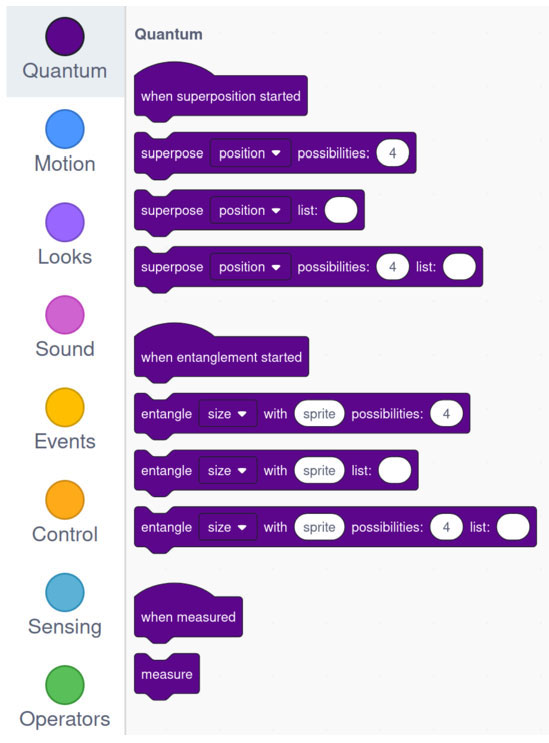
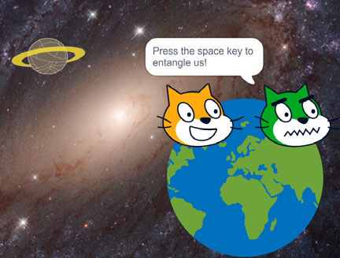

João Campos · Computação quântica
Circuit
qScratch
Aprender montando.
Investigar pelas respostas.
Uma trilha guiada até o circuito de Bell
e uma análise de quatro pares pré e pós.
O que é o QScratch?
Uma extensão do Scratch para explorar conceitos quânticos com blocos e personagens.
Superposição, emaranhamento e medição aparecem nas propriedades dos personagens.
O que trouxe para meu projeto
O ensino visual e a experimentação. No Circuit qScratch, desenvolvi uma trilha própria para montar e medir o circuito de Bell.

Blocos quânticos
Personagens no QScratchCada ideia vira uma peça
Uma trilha comum para iniciantes, com montagem gradual do circuito de Bell.
- 0 / 1Bit e qubitPreparar
- MediçãoObservar
- HHadamardComparar
- ⊕CNOTConectar
- Φ⁺BellMontar e medir
Descobrir → Testar → Experimentar
Etapas, pontos, retorno imediato e um gato professor.
Inspiração visual: QScratch e a trilha do Duolingo.
29 páginas de explicação · 15 perguntas · 5 práticas
Ideal: 00 ou 11, cada um com 50% de chance.
Quem entrou na análise
- 12documentos de progresso
consultados - 5com os cinco blocos
concluídos - 4com pré e pós enviados
na versão 3
Nos quatro registros
3 Ensino Superior incompleto
1 Ensino Médio
Todos já tinham ouvido falar do tema.
Três estavam tentando estudar pela primeira vez.
Nenhum declarou conhecer circuitos quânticos.
O critério de seleção foi definido após a coleta.
O que perguntei
antes e depois
Antes da trilha
8 perguntas
- Escolaridade
- Contato anterior com computação quântica
- Primeira tentativa de aprender
- Conhecimento prévio de circuitos
Interesse + confiança
Medição + porta H
Depois da trilha
7 etapas, incluindo comentário opcional
Interesse + confiança
Medição + porta H
- “Foi fácil entender as explicações?”
- “Foi fácil descobrir o que fazer em cada etapa?”
- “O que poderíamos explicar melhor?”
Escala de percepção: Nada · Pouco · Mais ou menos · Bastante · Muito
Duas perguntas de conteúdo
Os mesmos itens no pré e no pós, sem correção durante o formulário.
MMedição
“Ao medir um qubit, qual resultado aparece em uma única medição?”
Resposta esperadaUm resultado: 0 ou 1
HHadamard
“Neste circuito, o que a porta H faz quando é aplicada uma vez a um qubit preparado em 0?”
Resposta esperadaPrepara chances iguais de medir 0 ou 1
De 0 a 2 acertos por pessoa. Esses itens não avaliam todo o circuito.
Os acertos aumentaram
nos quatro pares
Total nas duas perguntas
8 respostas = 4 pessoas × 2 perguntas
Medição1/4 → 4/4
Porta H0/4 → 3/4
Acertos por registro (máximo: 2)| Código | Pré | Pós | Diferença |
|---|
| P05 | 0 | 2 | +2 |
|---|
| P07 | 0 | 1 | +1 |
|---|
| P08 | 0 | 2 | +2 |
|---|
| P11 | 1 | 2 | +1 |
|---|
Média: 0,25 → 1,75 acerto
Mudança observada neste grupo; não estabelece causa.
Confiança e interesse
mudaram de formas diferentes
Mudança nos mesmos quatro registros
Confiança
↑↑↑=
3 aumentaram · 1 ficou igual
Interesse
↑===
1 aumentou · 3 ficaram iguais
Cada quadrado representa um registro, sem identificar a pessoa.
Como avaliaram a experiência?
Clareza das explicações
Mais ou menos 1Bastante 2Muito 1
Facilidade de uso
Bastante 3Muito 1
O que posso concluir
Construí uma trilha funcional.
Observei melhora nas respostas
de um grupo de quatro pessoas.
Limites
- Prazo de entrega curto para ampliar os testes.
- Necessidade de revisão constante dos conteúdos.
- Análise restrita a quatro pares de concluintes.
Planos futuros
- Testar com o público-alvo previsto.
- Criar novas trilhas.
- Incluir ranking e ofensivas (dias seguidos de estudo).
- Explorar mais gamificação para incentivar o engajamento.
Ainda não posso atribuir a mudança à plataforma ou à gamificação.
Agora, na plataforma
Da explicação
à montagem de Bell.
- Trilha e exemplo interativo
- Quiz, previsão e bancada
- Medição e acompanhamento pelo professor
Abrir a plataforma ↗
circuit-qscratch.vercel.app